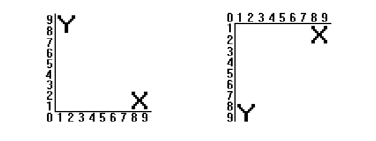

Noțiuni Introductive
Pixel. Ce este un pixel?
Un pixel este un element component foarte mic al unei imagini digitale.
Pe scurt, este un punct care are o culoare.
Pixelii unui monitor:
Un monitor are o rezoluție care se masoară in pixeli.
Un exemplu este 1920x1080.
- 1920 reprezintă numărul de pixeli care încap pe lungime
- 1080 reprezintă numărul de pixeli care încap pe lățime.
În funcție de numărul de pixeli al unui monitor,
acesta poate să arate mai multe/mai putine detalii.
Sistem de coordonate

- intr-un sistem de coordonate cum se învață la mate,
(primul sistem de coordonate) punctul (0,0) se află În
colțul stânga jos
- în grafica pe calculator punctul (0,0) se află
în colțul stânga sus.